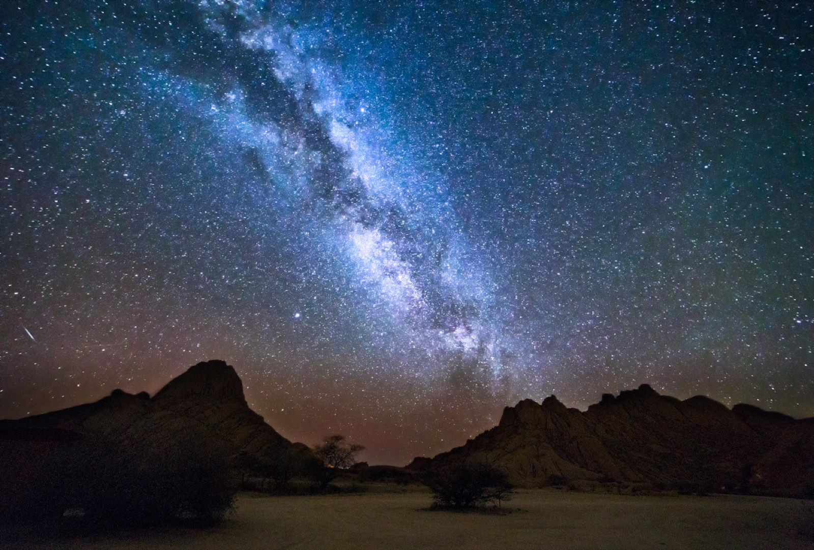
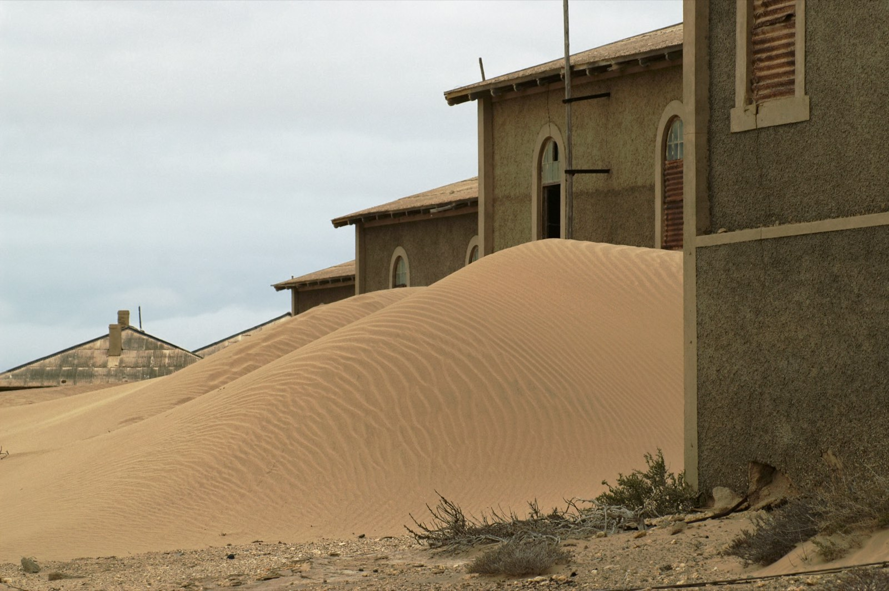
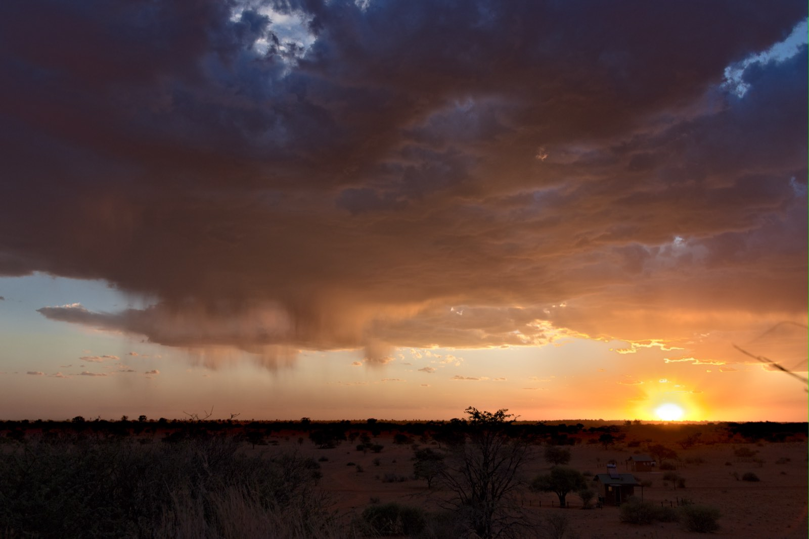

Keetmanshoop · Grand Sud
La forêt de Kokerboom sous les étoiles
On déambule entre des arbres-carquois centenaires au coucher du soleil, puis on lève les yeux vers l'une des plus belles voûtes étoilées de la planète.
On déambule entre des arbres-carquois centenaires au coucher du soleil, puis on lève les yeux vers l'une des plus belles voûtes étoilées de la planète.
Au crépuscule, la forêt de Kokerboom devient irréelle. Les arbres-carquois — ces aloès géants qui ne poussent qu'ici — se découpent sur un ciel orange, puis explosent d'étoiles dès la nuit tombée.
Près de Keetmanshoop, dans le Grand Sud, ces arbres centenaires forment l'un des décors les plus photogéniques de Namibie. Le pays compte parmi les ciels les moins pollués au monde : ici, la Voie lactée se déploie à l'œil nu. On y passe la fin de journée ensemble — coucher de soleil, puis ciel étoilé — pour clôturer une journée en beauté.
Notre fin de journée idéale dans le Grand Sud — douce, contemplative, et confortable.
En fin d'après-midi, quand la lumière commence à dorer. Le rythme est tranquille, on a tout notre temps.
On déambule librement, à la recherche du plus beau cadrage — ou simplement pour le plaisir de marcher au milieu de ces géants.
Chaque arbre s'embrase dans le couchant. On s'installe confortablement pour regarder le soleil disparaître.
Un verre, le calme, les premières étoiles qui s'allument. Tout est prévu, on n'a qu'à profiter.
Lampes éteintes, bien au chaud, on lève les yeux. Le ciel se couvre d'étoiles — on se sent minuscule et serein.
Des étoiles plein les yeux, on rentre se reposer, tout proche.
Le site est aménagé et facile d'accès, à deux pas de l'hébergement. On reste au chaud le soir venu, et tout (apéritif, transferts) est organisé : il ne reste qu'à s'émerveiller.
Quand le soleil descend, chaque arbre devient une sculpture de feu. On déambule entre les troncs, appareil en main, à la recherche du plus beau cadrage.

La nuit venue, le ciel s'embrase d'étoiles. Loin de toute lumière, on lève les yeux ensemble et l'on se sent minuscule. Le terrain rêvé de l'astrophoto.
Chaque lieu a sa propre page — suivez le fil, laissez-vous guider d'un point à l'autre.
Un labyrinthe de blocs de dolérite empilés par le temps — une aire de jeux pour géants.
Découvrir ce lieu
Une ancienne cité diamantifère lentement engloutie par le sable du désert.
Découvrir ce lieu
Des dunes rouges striées d'herbes dorées, et le réveil attendrissant des suricates au soleil.
Découvrir ce lieu"Le coucher de soleil entre les arbres-carquois, puis ce ciel d'étoiles… on en avait les larmes aux yeux. Une étape qu'on n'aurait jamais imaginée seuls."
"J'ai sorti le trépied et fait mes plus belles photos de Voie lactée. Ma passion avait été notée, l'étape calée au bon endroit. Bluffant."
"On ne connaissait même pas ce lieu. Quelle claque. Le genre de pépite qui fait toute la différence d'un itinéraire bien pensé."
Il s'intègre dans un itinéraire 100% sur mesure, pensé autour de vos envies. Parlons-en lors d'un appel découverte — offert et sans engagement.